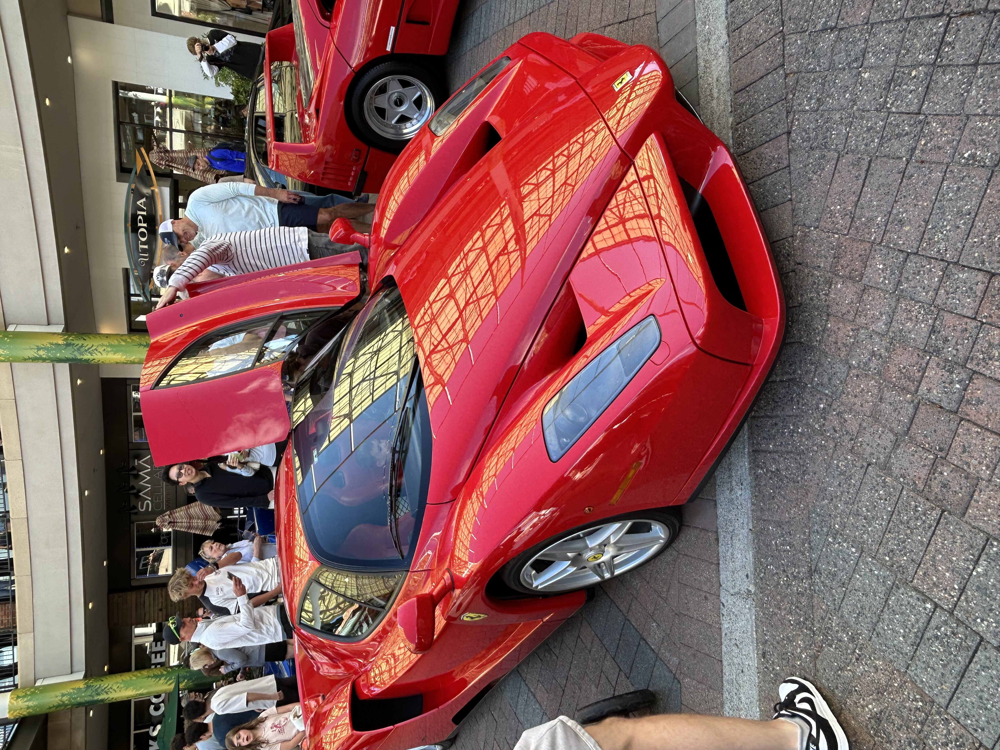
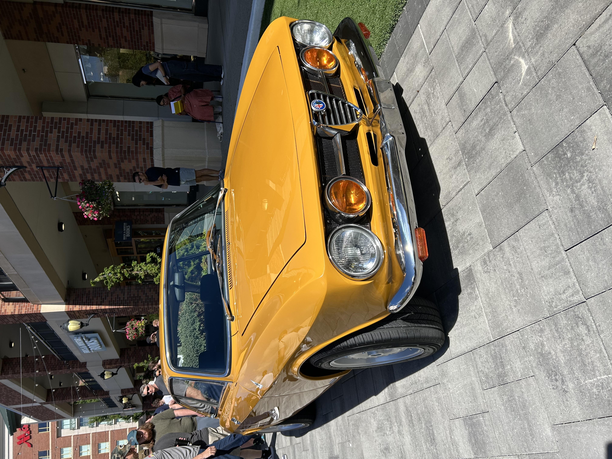
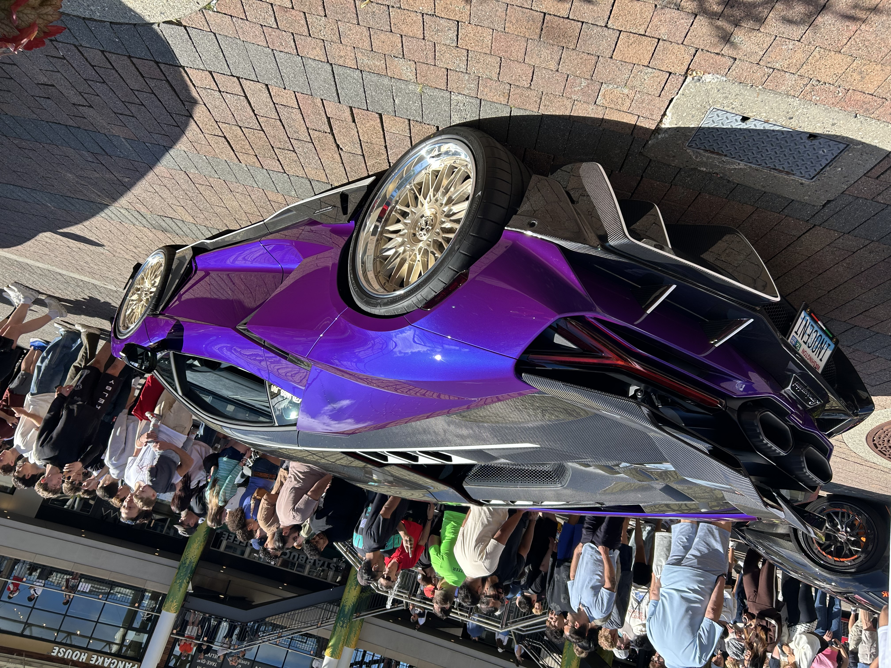

Featured Cars

Calypso: Illini Solar Car
Urbana-Champaign, Illinois
From modern supercars to forgotten classics, .SPOTTED. captures the cars that turn an ordinary street into something worth remembering
Italian design, unmistakable sound, and presence that stops traffic
Sharp lines, loud colors, and even louder engines
The forgotten-era icons that paved the way for today's supercars
Urbana-Champaign, Illinois
Note: I couldn't find any free-to-use videos online so I just copied my video from my personal porfolio website since I have Illini Solar Car in there



Named after Ferrari founder Enzo Ferrari, the Enzo was built as a road-going showcase of the company's Formula 1 technology. Its carbon-fiber body, aggressive aerodynamics, and naturally aspirated V12 made it one of Ferrari's defining supercars of the early 2000s.
A Ferrari built to bring the spirit of Formula 1 to the street.
Derived from Alfa Romeo's Tipo 33 racing car, the 33 Stradale was created as an exceptionally rare road-going sports car. Designed by Franco Scaglione, its lightweight construction, mid-engine layout, and racing-derived V8 made it one of the most advanced and beautiful Italian performance cars of its era.
A rare fusion of racing technology, lightweight engineering, and unmistakable Italian design.
The Lamborghini Revuelto is Lamborghini's flagship V12 plug-in hybrid supercar, introduced in 2023 as the successor to the Aventador. It combines a naturally aspirated V12 engine with three electric motors, delivering extraordinary performance while introducing hybrid technology to Lamborghini's V12 lineup.
A new-generation V12 icon combining Lamborghini's legendary naturally aspirated engine with cutting-edge hybrid performance.
Devanshu | Contact .SPOTTED. below or email us today!